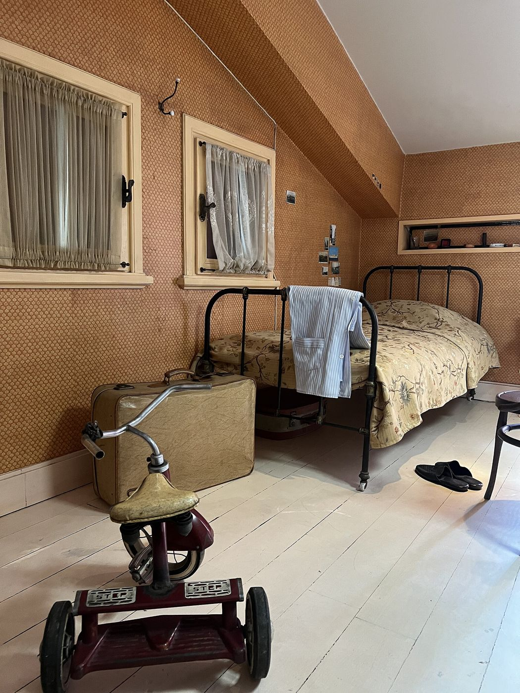
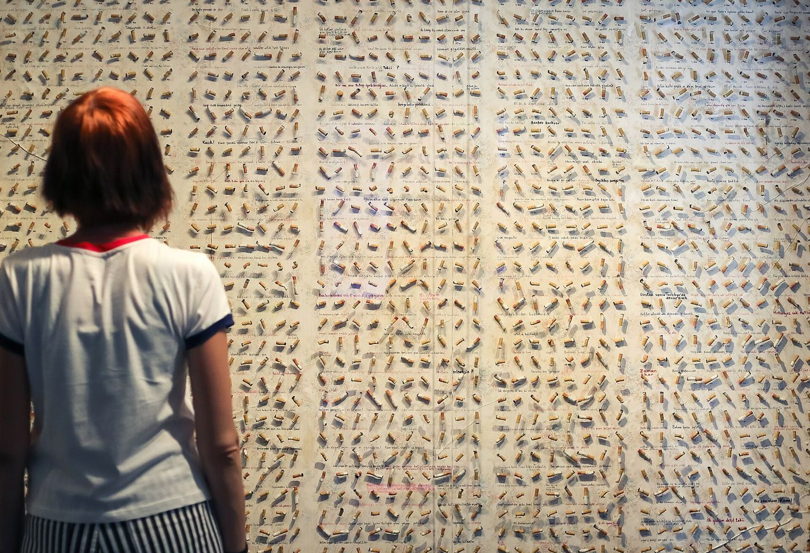
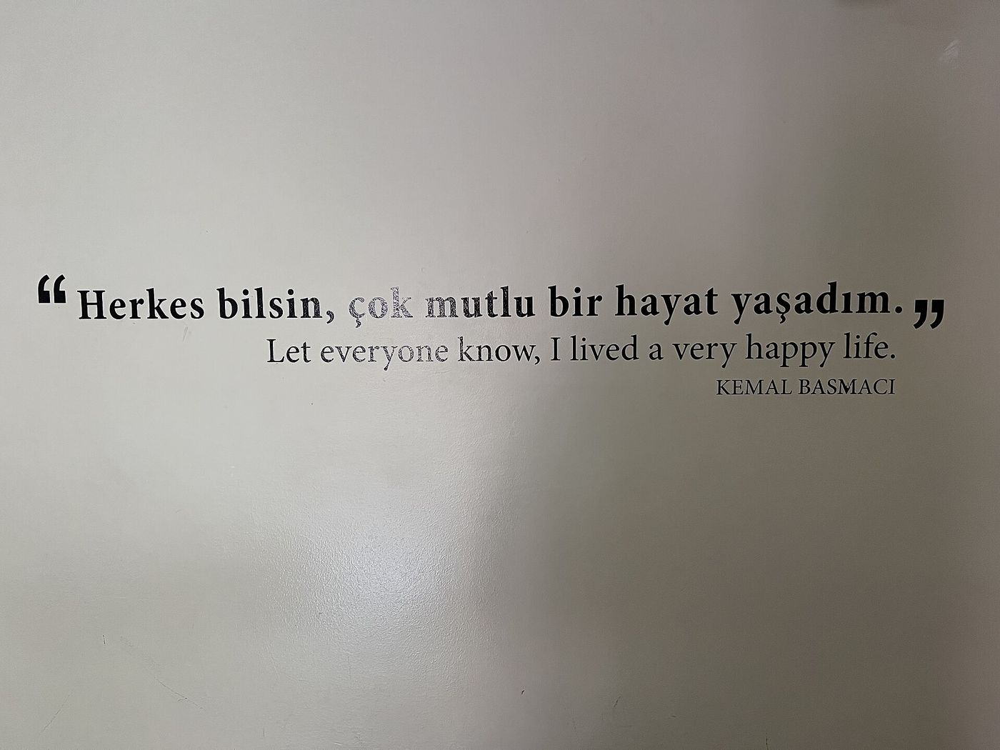

Cet essai a d’abord paru en turc, et une part de son argument repose sur la grammaire du turc ; j’ai gardé les formes turques et les ai expliquées. Les citations du roman sont traduites du turc par moi. La version française est de ma main.

« Hayatımın en mutlu anıymış, bilmiyordum. »
Orhan Pamuk, Le Musée de l’Innocence
« C’était, il se trouve, le moment le plus heureux de ma vie, et je ne le savais pas. »
Jede Leidenschaft grenzt ja ans Chaos, die sammlerische aber an das der Erinnerungen.
Walter Benjamin, « Ich packe meine Bibliothek aus »
I
La première phrase du roman est la clef non seulement du roman, mais du musée fondé avec lui : « Hayatımın en mutlu anıymış, bilmiyordum. » « C’était, il se trouve, le moment le plus heureux de ma vie, et je ne le savais pas. » À la première lecture, on entend cette phrase comme l’expression d’une tristesse, un regret rétrospectif, la complainte d’un bonheur manqué. Or le poids de la phrase tient moins à son sens qu’à sa grammaire. Kemal Basmacı ne dit pas qu’il est heureux ; il dit qu’il l’a été, qu’il l’a vécu sans le savoir, et qu’il ne l’apprend que maintenant. Le roman ne nous dit pas tout de suite quand est ce « maintenant ». Ce n’est que bien plus tard que nous comprenons avoir affaire à la voix d’un homme qui a laissé derrière lui toute la catastrophe de l’histoire et placé ce qu’il a vécu dans les vitrines d’un musée. La première phrase parle ainsi depuis la fin du roman ; c’est un dernier mot placé au tout début du récit.1
Le suffixe -mış (selon l’harmonie vocalique aussi -miş, -muş ou -müş), que la tradition grammaticale turque appelle « passé appris » ou mode du ouï-dire, marque que le locuteur n’a pas été témoin de l’événement et qu’il le connaît indirectement, par une inférence ou par un ouï-dire. Les linguistes ont attiré l’attention sur une autre fonction, plus fine, de ce suffixe : la surprise du moment où le locuteur rencontre une information qu’il n’attendait pas et à laquelle il n’était pas préparé. L’étude pionnière de Dan Slobin et Ayhan Aksu sur l’évidentialité en turc, publiée en 1982, et le concept de mirativité que Scott DeLancey, s’appuyant largement sur cette étude, introduisit en 1997 dans la littérature linguistique, ont montré que ce suffixe est précisément l’enregistrement grammatical du moment de la surprise.2 Je ne peux passer ici sous silence une petite mais vertigineuse coïncidence : dans la situation que Slobin et Aksu ont choisie pour illustrer cet emploi, le locuteur ouvre la porte, se trouve devant un visiteur qu’il n’attendait pas du tout, et les mots qui lui échappent sont : « Kemal gelmiş ! », « Tiens, Kemal est venu ! »3 Le Kemal de Pamuk entre dans le roman de la même manière : comme quelqu’un qui ouvre la porte de sa propre vie et y trouve un hôte qu’il n’attendait pas du tout, un bonheur en retard.
La psychanalyse avait rencontré bien plus tôt, sous un autre nom, la structure que la linguistique a trouvée dans le suffixe -mış. Dans l’Esquisse d’une psychologie scientifique, écrite en 1895, alors que la psychanalyse n’avait même pas encore de nom, et jamais publiée de son vivant, Freud rencontre une temporalité étrange en analysant la peur qu’éprouve une jeune femme qu’il nomme Emma d’entrer seule dans les magasins. Un attentat subi dans une boutique à l’âge de huit ans n’est pas traumatique au moment où il a lieu ; il acquiert sa valeur traumatique rétroactivement, lorsqu’une seconde scène, vécue à la puberté et en elle-même apparemment insignifiante, lui donne un sens nouveau.4 Freud appellera cette causalité à rebours Nachträglichkeit, et le concept atteindra sa forme la plus mûre dans le cas de l’Homme aux loups, publié en 1918, dans la longue analyse qui montre que le sens d’une scène vue par un enfant d’un an et demi ne s’est constitué que par un rêve fait à quatre ans.5 L’installation du concept au centre de la pensée psychanalytique sous son équivalent français, l’après-coup, est, on le sait, l’œuvre de Lacan d’abord, puis de Laplanche et Pontalis. La traduction de Strachey dans la Standard Edition, « deferred action », avait largement effacé le double mouvement du concept, le fait qu’il nomme à la fois un ajournement et un effet rétroactif.6
La phrase par laquelle Lacan formule cette temporalité dans son discours de Rome de 1953 se tient presque dans un rapport de miroir avec la première phrase du Musée de l’Innocence : « Ce qui se réalise dans mon histoire, n’est pas le passé défini de ce qui fut puisqu’il n’est plus, ni même le parfait de ce qui a été dans ce que je suis, mais le futur antérieur de ce que j’aurai été pour ce que je suis en train de devenir. »7 Le temps analytique est ainsi un passé qui s’ouvre vers l’avant : le sujet réécrit son passé selon ce qu’il deviendra. Le -mış de Kemal est comme une forme close de la même structure. Kemal aussi réécrit le passé depuis le présent ; mais le lieu où aboutit sa réécriture est moins un avenir qu’un musée. Là où le futur antérieur de l’analyse rend possible le mouvement du sujet, le passé miratif de Kemal fige ce mouvement derrière la vitre d’une vitrine. Le vrai drame du roman se noue, à mon sens, dans la tension entre ces deux temps, dans la question de savoir si l’après-coup deviendra une libération ou une prison. Arrivés à la dernière phrase du roman, nous verrons que cette question reçoit une réponse grammaticale inattendue.
II
Les grandes lignes de l’histoire sont connues. Au printemps 1975, Kemal, fils de trente ans d’une des riches familles de textile de Nişantaşı, est sur le point de se fiancer avec Sibel, parti à tous égards « convenable » par l’éducation, la famille et le milieu. Dans la boutique où il entre pour acheter un sac à Sibel, il rencontre Füsun, parente éloignée et pauvre de la famille, âgée de dix-huit ans. Leurs rendez-vous se poursuivent dans un appartement de l’immeuble Merhamet, « Merhamet » voulant dire miséricorde, qui appartient à la famille de Kemal et où sont entreposés de vieux meubles. Le roman ne formule jamais ouvertement l’ironie que porte le nom de l’immeuble ; mais il la laisse résonner à l’oreille du lecteur pendant des centaines de pages.
La position de Kemal dans cette première période est un exemple presque scolaire de la structure que Freud appela en 1912 le plus général des rabaissements de la vie amoureuse. Parlant des hommes qui ne parviennent pas à unir le courant tendre et le courant sensuel, Freud écrit la phrase qui sera ensuite citée d’innombrables fois : Wo sie lieben, begehren sie nicht, und wo sie begehren, können sie nicht lieben ; là où ils aiment, ils ne désirent pas, et là où ils désirent, ils ne peuvent aimer.8 Sibel, femme approuvée qu’on épouse, est placée au pôle de la tendresse ; Füsun, située « en bas » socialement, au pôle du désir. Mais ce qui distingue le roman de Pamuk d’un banal triangle amoureux, c’est que la conviction de Kemal qu’il a le droit de maintenir ce partage, le fantasme de ne renoncer à aucune des deux femmes, est démontée avec patience et sans pitié dans les premières parties du roman.
Il ne faut pas perdre de vue le cadre social de cet effondrement. La bourgeoisie stambouliote des années 1970 est suspendue entre la liberté sexuelle que promet l’occidentalisation et un vieil ordre moral où la virginité détermine encore la valeur sociale d’une femme. Le roman montre avec une clarté discrète mais indéniable que Sibel et Füsun ne paient pas de la même manière le prix de leur relation avec le même homme. Le concept de « marchandage avec le patriarcat » de Deniz Kandiyoti est ici à sa place : dans les limites de l’ordre patriarcal où elles vivent, les femmes développent différentes stratégies pour protéger ou améliorer leur position, et laquelle de ces stratégies est possible ne dépend pas peu de la position de classe.9 Le marchandage de Sibel et celui de Füsun ne se font pas à la même table.
Le fantasme s’effondre le soir des fiançailles. Füsun vient à la fête, voit Kemal aux côtés de Sibel et, dès le lendemain, disparaît. Chaque jour, à la même heure, Kemal se rend à l’immeuble Merhamet et attend. C’est ici que commence la partie du roman la plus dense du point de vue psychanalytique ; car le désir livre sa structure le plus clairement là où son objet se retire. Tant que Füsun est là, il y a une relation. Quand Füsun est partie, il ne reste que le désir : sans objet, sans adresse, et donc impossible désormais à apaiser par quoi que ce soit.
III
En l’absence de Füsun, Kemal se met à vivre, dans l’appartement, avec les objets qu’elle a touchés. Il prend une barrette, un crayon, un verre à thé, le passe sur sa joue, sur son cou, et sent sa douleur s’apaiser un instant. Le roman raconte ces scènes sans recourir à aucune ironie, avec la minutie d’un manuel de médecine et le caractère répétitif d’un livre de prières. Le premier concept qui vient à l’esprit du lecteur est sans doute le fétichisme, et cette première impression n’est pas tout à fait fausse. Dans son article bref et dense de 1927, Freud définit le fétiche comme le produit du refus, par le sujet, d’admettre le verdict d’une perception, un manque, qu’il perçoit pourtant ; c’est-à-dire du désaveu qu’il nomme Verleugnung. Le fétiche est le monument de ce refus : un objet qui permet à la fois de savoir et de ne pas savoir le manque.10 Octave Mannoni, une quarantaine d’années plus tard, dans l’essai où il étend cette logique à toute une théorie de la croyance, la fait tenir dans l’une des phrases les plus simples du français : Je sais bien, mais quand même…11 Kemal sait que Füsun est partie ; mais sa barrette est là, quand même.
Pourtant, épuiser le rapport de Kemal aux objets par le concept de fétichisme serait manquer la vraie veine du roman. « Deuil et mélancolie », écrit par Freud en 1915 et publié en 1917, offre ici une distinction bien plus fine. Pour Freud, le deuil est la soumission de la libido au verdict de l’épreuve de réalité, « l’objet aimé n’existe plus » ; mais cette soumission ne s’accomplit pas d’un coup. Chaque souvenir, chaque attente liés à la personne perdue sont rappelés « pièce par pièce » (Stück für Stück), selon l’expression de Freud, surinvestis, et seulement ensuite détachés.12 Le deuil est, en ce sens, un adieu qui se fait en touchant la perte pièce par pièce, et ce que fait Kemal est littéralement l’envers de ce travail : lui aussi touche les souvenirs un à un ; mais au lieu de détacher chaque souvenir qu’il touche, il le lie à un objet, le garde, et passe au suivant. L’adieu que le deuil accomplit pièce par pièce devient entre ses mains une conservation accomplie pièce par pièce.
La formule par laquelle Freud distingue la mélancolie du deuil vient ici d’elle-même à l’esprit : Bei der Trauer ist die Welt arm und leer geworden, bei der Melancholie ist es das Ich selbst ; dans le deuil, le monde est devenu pauvre et vide, dans la mélancolie, c’est le moi lui-même. Le mélancolique ne peut renoncer à l’objet perdu, il s’identifie à lui, et, selon l’image inoubliable de Freud, l’ombre de l’objet tombe sur le moi. L’existence de Kemal dans les parties centrales du roman se déroule dans cette ombre. Il se retire peu à peu de son travail, de sa famille, de la vie mondaine de sa classe ; sa vie devient une orbite qui se resserre autour de ce qui reste de Füsun.
C’est pourtant Lacan, renversant délibérément le cadre freudien, qui pose la vraie question sur la perte de Kemal. Dans son dixième séminaire, sur l’angoisse, tenu en 1962–1963, Lacan juge insuffisante la théorie freudienne du deuil et avance cette phrase provocante : Nous ne sommes en deuil que de quelqu’un dont nous pouvons nous dire : j’étais son manque.13 Le deuil, selon cette lecture, ne concerne pas le vide que l’autre laisse en nous, mais la place que nous occupions dans le désir de l’autre, c’est-à-dire la perte de notre position de manque de l’autre. Relire Le Musée de l’Innocence à la lumière de cette phrase est bouleversant. Car le roman n’apporte jamais de réponse ferme à la question de savoir si Kemal était le manque de Füsun. Ce dont Kemal fait le deuil n’est peut-être pas Füsun, mais ce bref temps où il pouvait croire être pour elle un manque : les après-midi de l’immeuble Merhamet, l’innocence qui donne son nom au roman. Sous cet angle, le nom du musée peut presque se lire comme un diagnostic : l’innocence est ici le nom du temps où l’on ne doute pas encore de sa place dans le désir de l’autre.
IV
Pour comprendre la collection de Kemal, il faut quitter un instant la psychanalyse et revenir à une courte causerie donnée par Walter Benjamin à l’été 1931. Venant d’installer sa bibliothèque dans un nouvel appartement et en train d’ouvrir ses caisses, Benjamin, dans ce qui est peut-être l’un des plus beaux textes jamais écrits sur la collection, formule la phrase que j’ai prise en épigraphe : toute passion confine au chaos, mais la passion du collectionneur confine au chaos des souvenirs. Pour Benjamin, la possession est pour le vrai collectionneur le rapport le plus profond que l’on puisse avoir avec les choses ; mais cette profondeur ne vient pas de ce que les objets prendraient vie en lui, c’est au contraire lui qui habite en eux : nicht daß sie in ihm lebendig wären, er selber ist es, der in ihnen wohnt. La causerie s’achève, après avoir bâti devant ses auditeurs une demeure faite de livres, sur une phrase disant que le collectionneur, comme il se doit, y disparaît.14


Ces phrases annoncent presque comme une prophétie les dernières années que Kemal passera dans les combles de son propre musée, en haut de l’ancienne maison de la famille de Füsun, avec son lit et ses affaires. Ceux qui visitent aujourd’hui le musée de Çukurcuma trouvent au dernier étage un étroit lit de fer, une vieille valise et un tricycle d’enfant que les lecteurs du roman reconnaîtront aussitôt (Figure 2). Le collectionneur, comme disait Benjamin, a disparu dans sa collection. Un intertitre du chapitre que Jean Baudrillard consacre à la collection dans Le Système des objets, en 1968, résume à lui seul la logique de cette disparition : Un discours à soi-même.15 La collection est la forme sous laquelle le sujet se raconte à lui-même, sans fin, sa propre perte.
Ce regard dit aussi quelque chose de l’histoire de la psychanalyse elle-même. Freud amassa au cours de sa vie une collection d’environ deux mille antiquités, remplit son cabinet de figurines égyptiennes, grecques et romaines, et écouta ses patients sous le regard de ces petits objets. La célèbre conversation où il explique l’inconscient à l’Homme aux rats en le comparant à Pompéi se déroule elle aussi à l’ombre de cette collection : ce qui était sous terre s’est conservé parce qu’il était enfoui ; dès qu’on l’exhume, sa destruction commence.16 Le musée de Kemal renverse cette image. Ce qui conservera ses objets ne sera pas l’obscurité de la terre, mais la vitre de la vitrine : la remontée au jour qui est, à Pompéi, le moment où commence la ruine devient à Çukurcuma une sorte de mise sous scellés.
La réponse la plus juste à la question de savoir si quelque chose distingue cette collection du fétiche et de la mélancolie vient, de manière inattendue, d’une anecdote que Lacan raconte dans son séminaire sur l’éthique. Discutant de la sublimation pendant l’hiver 1960, Lacan évoque une collection vue chez le poète Jacques Prévert : des boîtes d’allumettes vides, emboîtées les unes dans les autres de façon à former un ruban courant le long de la cheminée et du mur.17 Ce qui retint l’attention de Lacan, c’est que les boîtes prises une à une n’avaient aucune valeur, et que tout l’effet de la collection naissait de leur disposition en répétition, du vide que cette disposition faisait apparaître. La formule de la sublimation la plus citée aujourd’hui se trouve dans le même séminaire : la sublimation élève un objet à la dignité de la Chose, c’est-à-dire à la place de ce manque absolu qu’on ne peut jamais posséder et dont on ne peut que tracer le pourtour.


Le mur de mégots qui accueille le visiteur à l’entrée du musée est la réplique presque exacte de ce que Lacan vit sur la cheminée de Prévert (Figure 3). Quatre mille deux cent treize mégots, chacun à lui seul un rien, le reste sans valeur d’une consommation ; mais côte à côte, rangée après rangée, ils rendent visible une absence qu’aucun d’eux ne pourrait porter seul. Le mégot est un exemple presque didactique de l’objet que Lacan a défini comme cause du désir, l’objet petit a : non la personne entière, mais un morceau détaché d’elle ; la dernière trace d’une lèvre, le reste laissé par un regard, une voix, un geste de la main.18 Là où Freud pensait le fétiche comme un voile, la sublimation lacanienne construit un cadre, et l’histoire de Kemal est, à mon sens, celle du long et douloureux passage entre ces deux opérations. La barrette qu’il passait sur sa joue dans l’immeuble Merhamet était un fétiche qui tentait de voiler une absence ; les quatre mille deux cent treize mégots rangés sur le mur du musée sont une structure qui trace le pourtour de l’absence.
V
Quand Füsun réapparaît un an plus tard, elle est mariée. Son mari, Feridun, est un jeune cinéaste qui veut faire des films ; pour que puisse se tourner le film dont Füsun doit tenir le premier rôle, Kemal fonde Limon Film et fournit lui-même le capital. Pendant les huit années suivantes, Kemal prend part aux dîners de la maison de Çukurcuma, à la table où s’assoient aussi les parents de Füsun et son mari. La télévision est allumée, on boit du raki, et un amour dont on ne parle jamais est remis en scène chaque soir avec le même soin cérémoniel.
Ces huit années rappellent la thèse du célèbre livre où Denis de Rougemont, en 1939, analysa la structure de l’amour occidental à travers la légende de Tristan : la passion se nourrit de l’obstacle ; les amants aiment moins l’un l’autre que l’amour lui-même, et l’obstacle qui l’intensifie.19 Les leçons que Lacan consacre, dans son séminaire sur l’éthique, à l’amour courtois du Moyen Âge reconstruisent la même structure dans la langue de la psychanalyse : la Dame inaccessible est sublimée dans la mesure même où elle est inaccessible, et la formule de la sublimation évoquée plus haut trouve ici son exemple le plus pur.20 La table de Kemal est une scène d’amour courtois dressée dans une maison de quartier de l’Istanbul du vingtième siècle. Que Kemal finance la société de Feridun est le détail le plus saisissant de cette scène. L’amant qui fournit le capital de son rival investit, au sens figuré comme au sens propre, dans la persistance de l’obstacle.
Quand les obstacles tombent, la catastrophe arrive. Le père de Füsun meurt, son mariage prend fin ; Füsun pose comme condition d’être présentée à la famille de Kemal, avec des fiançailles officielles et un mariage. Kemal, Füsun, la mère de Füsun, Nesibe Hanım, et le chauffeur de la famille, Çetin Bey, prennent la route en voiture pour Paris. Au matin de la nuit passée dans un hôtel de Babaeski, c’est-à-dire de l’union attendue depuis neuf ans, Füsun conduit ; la voiture a un accident, Füsun meurt, Kemal est grièvement blessé. Le roman laisse ouverte la question de savoir si l’accident fut un accident ou autre chose, et le lecteur reste seul avec elle. Une lecture psychanalytique ne doit pas chercher à la refermer. Mais elle peut souligner une structure : le désir nourri neuf ans durant par un obstacle se fracasse contre un mur après la première nuit où l’obstacle a disparu. Ce que dit la proposition il n’y a pas de rapport sexuel, à laquelle Lacan revint sans cesse dans sa dernière période, ne saurait évidemment être une chose aussi grossière que le fait que les gens ne font pas l’amour ; ce qu’elle dit, c’est que le fantasme de deux moitiés s’unissant en un tout ne peut pas s’écrire.21 Même une union attendue neuf ans ne peut devenir un accomplissement ; à chaque rencontre, quelque chose se manque, et dans le roman c’est Füsun qui paie ce manque de sa vie.
À ce point surgit la vraie question que le roman, ou plutôt le récit de Kemal, dissimule : que voulait Füsun ? Füsun veut devenir actrice ; mais ce désir passe tout au long du roman par l’argent, l’approbation et le regard des autres. C’est Kemal qui nous parle de Füsun, et la voix de Füsun se fait entendre de l’intérieur de la collection de l’homme qui l’aime. Le musée est, sous cet angle, une structure qui transforme la vie d’une femme en catalogue du désir d’un homme. La grandeur du roman tient à ce qu’il accomplit cette transformation tout en permettant au lecteur de s’en apercevoir. Être l’objet du désir peut vouloir dire ne pas pouvoir être le sujet de son propre désir ; Le Musée de l’Innocence est un roman qui porte tout le poids de cette phrase.
VI
Une fois rétabli, Kemal décide de faire de la maison des Keskin à Çukurcuma un musée ; mais il n’écrit pas lui-même son histoire. Il va trouver Orhan Pamuk et lui demande d’écrire le roman qui sera le catalogue du musée. Dans le dernier chapitre du roman, le narrateur change : Pamuk raconte la mort de Kemal, et le livre se clôt, à la demande de Kemal, sur cette phrase : « Herkes bilsin, çok mutlu bir hayat yaşadım. » « Que tout le monde le sache : j’ai vécu une vie très heureuse. » Cette phrase est aujourd’hui écrite aussi sur le mur du musée (Figure 4).


Le Modeste manifeste pour les musées, que Pamuk écrivit après l’ouverture du musée, offre un arrière-plan utile pour saisir la portée publique de cette dernière phrase. Le manifeste dit que les grands musées nationaux présentent l’histoire d’une nation comme si elle était plus importante que les histoires des individus, compare la transformation des musées, de palais en institutions nationales, au passage de l’épopée au roman, et se conclut en proclamant que l’avenir des musées est dans les maisons des gens.22 Le Musée de l’Innocence est la première application de ce programme : le musée d’un individu opposé à l’histoire d’une nation, et de surcroît le musée d’une passion devenue, aux yeux de son entourage, une catastrophe.
Que tout le monde le sache. À qui s’adresse cette phrase ? Le lieu que Lacan appelle le grand Autre, le témoin dont le sujet espère qu’il reconnaîtra sa vérité, prend ici le corps du visiteur du musée et du lecteur. Le bonheur de Kemal ne deviendra réel que lorsqu’un témoin l’aura confirmé, et le musée est l’espace de ce témoignage. Dans l’un de ses derniers séminaires, Lacan lit l’écriture de James Joyce comme une invention qui maintient ensemble son monde subjectif menacé de dislocation et lui gagne un nom, et il nomme cette invention sinthome.23 Le sinthome est moins le nom d’une guérison que celui d’une solution singulière qui permet au sujet de vivre avec son symptôme et d’en faire une œuvre. Le musée de Kemal peut se lire comme une telle solution : il ne ramène pas la perte, mais il permet qu’autour de la perte se construisent une vie et un nom. À cette différence près : Joyce avait écrit lui-même son nom ; celui de Kemal, c’est un autre, un romancier, qui l’écrit.
J’ai commencé cet essai par un suffixe ; je voudrais le finir par un suffixe. La première phrase du roman était construite sur -mış : « anıymış », un passé appris après coup, indirectement et avec surprise. La dernière est construite sur -dı : « yaşadım », « j’ai vécu ». En turc, ce suffixe indique que le locuteur connaît l’événement de première main, qu’il en a été témoin, et qu’il l’assume comme son propre savoir.24 Le roman a ainsi parcouru un chemin qui va d’un passé miratif à un passé attesté : l’homme qui découvrait sa vie avec la surprise d’un étranger finit par la déclarer comme sa propre vie. Il est difficile d’imaginer un mouvement grammatical qui résume mieux le but du travail psychanalytique. Dans son discours de Rome, Lacan dit qu’au fondement de la méthode que Freud appela psychanalyse il y a l’assomption par le sujet de son histoire, en tant qu’elle est constituée par la parole adressée à l’autre.25 Le Musée de l’Innocence prend au sérieux les deux moitiés de cette formule. Le passé attesté de Kemal ne sort pas de sa propre bouche, mais de la plume d’un autre ; pour pouvoir dire « j’ai vécu », il lui a fallu un témoin, un écrivain, un musée. Peut-être le bonheur, du moins au sens où ce roman l’enseigne, est-il quelque chose qui ne se contente pas d’être vécu, mais attend d’être mis en paroles devant un autre.
Post-scriptum
L’adaptation en neuf épisodes de Netflix, réalisée par Zeynep Günay sur un scénario d’Ertan Kurtulan, avec Selahattin Paşalı dans le rôle de Kemal et Eylül Lize Kandemir dans celui de Füsun, sortie le 13 février 2026, a valu au roman une nouvelle génération de lecteurs.26 La question que l’adaptation adresse au spectateur est l’envers exact de la lecture que j’ai tenté de proposer. Dans le roman, nous ne connaissons Füsun et les objets que par la parole de Kemal ; la caméra donne à Füsun un visage, une voix et un regard propres. Jusqu’où une femme constituée comme objet d’une collection peut-elle, à l’écran, déborder le récit de Kemal ? C’est une question que chacun de ceux qui regardent l’adaptation peut se poser, et peut-être doit se poser.
Notes
- Le roman parut en 2008 ; le musée de Çukurcuma ouvrit ses portes le 28 avril 2012. La même année, Pamuk publia le catalogue du musée, L’Innocence des objets. Cette structure, où roman et musée se présupposent l’un l’autre, oblige à penser ensemble les deux faces de l’œuvre. ↩︎
- D. I. Slobin et A. A. Aksu, « Tense, aspect and modality in the use of the Turkish evidential » (1982) ; S. DeLancey, « Mirativity: The grammatical marking of unexpected information », Linguistic Typology 1 (1997), p. 33–52. S’appuyant sur Slobin et Aksu, DeLancey montre que l’inférentiel turc peut aussi, selon le contexte, prendre une fonction mirative. Les linguistes francophones parlent, après Gilbert Lazard, de « médiatif » et d’« admiratif ». ↩︎
- Slobin et Aksu (1982), p. 187. Dans l’exemple, le locuteur entend quelqu’un approcher, ouvre la porte et voit un visiteur qu’il n’attendait pas du tout, Kemal ; qu’il choisisse la forme en -mış alors même qu’il est témoin direct de l’événement montre que le suffixe remplit ici non une fonction évidentielle, mais une fonction qui marque la surprise. ↩︎
- S. Freud, Esquisse d’une psychologie scientifique (1895 ; première publication 1950), deuxième partie. Que le cas où Freud élabore pour la première fois le concept d’après-coup repose sur deux scènes situées dans une boutique sonne comme une rime ironique, quand on songe que l’histoire de Kemal commence elle aussi dans une boutique. ↩︎
- S. Freud, « Extrait de l’histoire d’une névrose infantile (L’Homme aux loups) » (1918 [1914]), in Cinq psychanalyses. Les textes de Freud sont cités sous leurs titres français usuels, avec l’année de première publication. ↩︎
- J. Laplanche et J.-B. Pontalis, Vocabulaire de la psychanalyse (1967), article « Après-coup ». ↩︎
- J. Lacan, « Fonction et champ de la parole et du langage en psychanalyse » (1953), in Écrits, Paris, Seuil, 1966, p. 300. ↩︎
- S. Freud, « Sur le plus général des rabaissements de la vie amoureuse » (1912), in La Vie sexuelle. ↩︎
- D. Kandiyoti, « Bargaining with patriarchy », Gender & Society 2/3 (1988), p. 274–290. ↩︎
- S. Freud, « Le fétichisme » (1927), in La Vie sexuelle. Freud porte cette idée dans un cadre plus général dans « Le clivage du moi dans le processus de défense » (1940 [1938]), publié après sa mort. ↩︎
- O. Mannoni, « Je sais bien, mais quand même… », in Clefs pour l’imaginaire ou l’Autre Scène, Paris, Seuil, 1969. ↩︎
- S. Freud, « Deuil et mélancolie » (1917 [1915]), in Métapsychologie. Les trois expressions que je cite dans le texte proviennent respectivement des passages qui décrivent le travail du deuil, la distinction entre deuil et mélancolie, et l’identification dans la mélancolie : « Stück für Stück » ; « Bei der Trauer ist die Welt arm und leer geworden, bei der Melancholie ist es das Ich selbst » ; « Der Schatten des Objekts fiel so auf das Ich ». ↩︎
- J. Lacan, Le Séminaire, livre X : L’angoisse (1962–1963), Paris, Seuil, 2004, p. 166. ↩︎
- W. Benjamin, « Ich packe meine Bibliothek aus. Eine Rede über das Sammeln » (1931) ; en français : « Je déballe ma bibliothèque », in Œuvres II, Paris, Gallimard, 2000. Dans la dernière phrase de la causerie, le collectionneur disparaît dans sa demeure de livres « wie recht und billig », comme il est juste. ↩︎
- J. Baudrillard, Le Système des objets, Paris, Gallimard, 1968, chapitre « Le système marginal : la collection ». ↩︎
- La collection de Freud est aujourd’hui conservée au Freud Museum de Londres, dans la maison où il passa sa dernière année. Pour la comparaison avec Pompéi, voir « Remarques sur un cas de névrose obsessionnelle (L’Homme aux rats) » (1909), in Cinq psychanalyses. ↩︎
- J. Lacan, Le Séminaire, livre VII : L’éthique de la psychanalyse (1959–1960), Paris, Seuil, 1986. Pour la formule de la sublimation, p. 133 : « elle élève un objet […] à la dignité de la Chose ». Les boîtes d’allumettes de Prévert figurent dans la même discussion. ↩︎
- À partir du dixième séminaire, Lacan pense l’objet petit a comme un reste de l’entrée du sujet dans le langage, et en compte comme formes principales le sein, les fèces, le regard et la voix. ↩︎
- D. de Rougemont, L’Amour et l’Occident, Paris, Plon, 1939. ↩︎
- Lacan, Séminaire VII, en particulier la leçon « L’amour courtois en anamorphose ». ↩︎
- La proposition est une formule à laquelle Lacan revient à maintes reprises depuis la fin des années 1960 ; pour son élaboration la plus détaillée, voir Le Séminaire, livre XX : Encore (1972–1973), Paris, Seuil, 1975. ↩︎
- O. Pamuk, Modeste manifeste pour les musées. Le texte, en onze points, est publié sur le site officiel du musée : masumiyetmuzesi.org. ↩︎
- J. Lacan, Le Séminaire, livre XXIII : Le sinthome (1975–1976), Paris, Seuil, 2005. ↩︎
- Sur l’opposition évidentielle entre -dı et -mış en turc, voir A. Göksel et C. Kerslake, Turkish: A Comprehensive Grammar (2005) ; ainsi que Slobin et Aksu (1982). Dans la littérature linguistique, ces suffixes s’écrivent avec des majuscules, -DI et -mIş, pour couvrir toutes les formes qu’ils prennent selon l’harmonie vocalique et consonantique. ↩︎
- Lacan, « Fonction et champ… », in Écrits. ↩︎
- La série a été produite par Ay Yapım ; les neuf épisodes sont sortis le même jour. ↩︎
Bibliographie
- Baudrillard, J. (1968). Le Système des objets. Gallimard.
- Benjamin, W. (2000). Je déballe ma bibliothèque (1931). In Œuvres II. Gallimard.
- DeLancey, S. (1997). Mirativity: The grammatical marking of unexpected information. Linguistic Typology, 1, 33–52.
- Freud, S. (1909). Remarques sur un cas de névrose obsessionnelle. In Cinq psychanalyses. PUF.
- Freud, S. (1912). Sur le plus général des rabaissements de la vie amoureuse. In La Vie sexuelle. PUF.
- Freud, S. (1917 [1915]). Deuil et mélancolie. In Métapsychologie. Gallimard.
- Freud, S. (1918 [1914]). Extrait de l’histoire d’une névrose infantile. In Cinq psychanalyses. PUF.
- Freud, S. (1927). Le fétichisme. In La Vie sexuelle. PUF.
- Freud, S. (1950 [1895]). Esquisse d’une psychologie scientifique. In La Naissance de la psychanalyse. PUF.
- Göksel, A. et Kerslake, C. (2005). Turkish: A Comprehensive Grammar. Routledge.
- Kandiyoti, D. (1988). Bargaining with patriarchy. Gender & Society, 2(3), 274–290.
- Lacan, J. (1966). Fonction et champ de la parole et du langage en psychanalyse (1953). In Écrits (p. 237–322). Seuil.
- Lacan, J. (1975). Le Séminaire, livre XX : Encore (1972–1973). Seuil.
- Lacan, J. (1986). Le Séminaire, livre VII : L’éthique de la psychanalyse (1959–1960). Seuil.
- Lacan, J. (2004). Le Séminaire, livre X : L’angoisse (1962–1963). Seuil.
- Lacan, J. (2005). Le Séminaire, livre XXIII : Le sinthome (1975–1976). Seuil.
- Laplanche, J. et Pontalis, J.-B. (1967). Vocabulaire de la psychanalyse. PUF.
- Mannoni, O. (1969). Je sais bien, mais quand même… In Clefs pour l’imaginaire ou l’Autre Scène. Seuil.
- Pamuk, O. (2008). Masumiyet Müzesi. İletişim. [Trad. fr. : Le Musée de l’Innocence. Gallimard, 2011.]
- Pamuk, O. (2012). Şeylerin Masumiyeti. İletişim. [Trad. fr. : L’Innocence des objets. Gallimard, 2012.]
- Pamuk, O. (s. d.). Modeste manifeste pour les musées. masumiyetmuzesi.org.
- Rougemont, D. de (1939). L’Amour et l’Occident. Plon.
- Slobin, D. I. et Aksu, A. A. (1982). Tense, aspect and modality in the use of the Turkish evidential. In P. J. Hopper (dir.), Tense-Aspect: Between Semantics and Pragmatics (p. 185–200). John Benjamins.